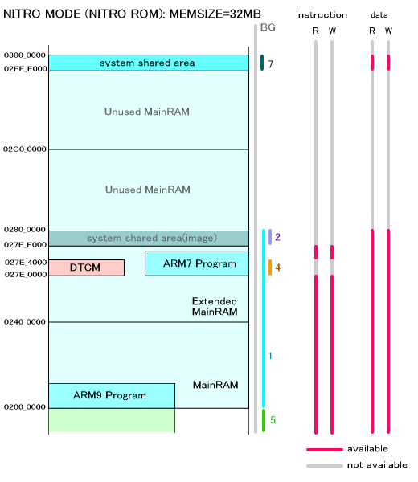

プロテクションユニットは、メモリのリード／ライト属性やキャッシュ／ライトバックの使用の有無を設定してメモリを保護するための機能です。8つのリージョンをメモリ空間にマッピングすることが可能で、それぞれに異なった属性を設定することができます。
プロテクションユニットは ARM9 プロセッサでのみ使用可能です。
以下の関数で、プロテクションユニット自体をイネーブル、ディセーブルとすることが出来ます。
OS_EnableProtectionUnit()
OS_DisableProtectionUnit()
各プロテクションリージョンの設定を行なうための関数は以下の通りです。
OS_SetProtectionRegion()
OS_SetProtectionRegionParam()
設定を取得するための関数は以下の通りです。
OS_GetProtectionRegionAddress()
OS_GetProtectionRegionSize()
OS_GetProtectionRegionParam()
デフォルトでは各リージョンは以下のようにマッピングされています。
リージョンが重なっている場合、リージョン番号の大きい方が優先されます。
| リージョン番号 | 用途 | ベースアドレス | サイズ | キャッシュ | ライトバッファ | ユーザ属性(命令) | ユーザ属性(データ) |
|---|---|---|---|---|---|---|---|
| - | バックグラウンド | 0x00000000 | 4GByte ( 0x100000000 ) |
× | × | NA | NA |
| 0 | I/Oレジスタ, VRAM等 | HW_IOREG ( 0x04000000 ) |
64MByte ( 0x4000000 ) |
× | × | R/W | R/W |
| 1 | メインメモリ, WRAM | HW_MAIN_MEM_MAIN ( 0x02000000 ) |
4MByte / 8MByte ( 0x400000/0x800000 )(注1) |
○ | ○ | R/W | R/W |
| 2 | 共有メインメモリイメージ (注2) |
HW_MAIN_MEM_IM_SHARED ( 0x027FF000 ) |
4KByte ( 0x1000 ) |
× | × | NA | R/W |
| 3 | カートリッジ | HW_CTRDG_ROM ( 0x08000000 ) |
128MByte ( 0x8000000 ) |
× | × | NA | R/W |
| 4 | DTCM | HW_DTCM ( 0x027E0000/0x2FE0000 ) (注3) |
16KByte ( 0x4000 ) |
× | × | NA | R/W |
| 5 | ITCM | HW_ITCM_IMAGE ( 0x01000000 ) (注4) |
16MByte ( 0x1000000 ) |
× | × | R/W | R/W |
| 6 | BIOS予約 | HW_BIOS ( 0xFFFF0000 ) |
32KByte ( 0x8000 ) |
○ | × | R | R |
| 7 | 共有メインメモリ | HW_MAIN_MEM_SHARED ( 0x02FFF000 ) |
4KByte ( 0x1000 ) |
× | × | NA | R/W |
(注1)
メインメモリの保護を用途とするプロテクションリージョン1 のサイズは、デバッガ上で動作させる場合は、OS_EnableMainExArena() を OS_InitArena() や OS_Init() の前に指定することで 8MByte となります。実機の場合は上記の設定に依らず常に
4MByte となります。
以前のバージョンとの互換性のために、上記の指定の替わりに、OS ライブラリを NITRO_MEMSIZE=8M を指定してコンパイルすれば、プロテクションリージョン1 のサイズは 8MByte となります ( デバッガ上で動作させる場合 )。
(注2)
TWL-SDK の前身である NITRO-SDK では、このプロテクションリージョン2はメインメモリ上の
ARM7 専用領域を保護するために使用されていましたが、TWL-SDK では共有メインメモリイメージという異なる用途に使用しますのでメインメモリ
ARM7 専用領域の保護はありません。なお HYBRID ROM を NITRO モードで動作させた場合には正確には共有メインメモリのイメージではなく、共有メインメモリとは独立した領域となっています。
(注3)
DTCM の開始位置は lsf ファイルで指定されています。このアドレスは、動作モードでなく
ROM の種類で決定されます。NITRO ROM では 0x027E0000 が、HYBRID ROM、LIMITED
ROMでは 0x02FE0000 がデフォルトの値となっています。
(注4)
NULL ポインタへのアクセスで例外を発生させるためにあえて 0x00000000 からにしていません。
どのようにプロテクションリージョンが設定されるかをメモリマップと併せて図示します。
| NITRO モードでの動作 | ||
| ROM の種類 | 動作プラットフォーム | 該当する項目 |
|---|---|---|
| NIRO ROM | NITRO 実機 TWL 実機 すべての FINALROMビルド |
NITRO MODE (NITRO ROM): MEMSIZE=4MB |
| IS-NITRO-DEBUGGER ENSATA EMULATOR |
NITRO MODE (NITRO ROM): MEMSIZE=8MB | |
| IS-TWL-DEBUGGER | NITRO MODE (NITRO ROM): MEMSIZE=32MB | |
| HYBRID ROM | NITRO 実機 すべての FINALROMビルド |
NITRO MODE (HYBRID ROM): MEMSIZE=4MB |
| IS-NITRO-DEBUGGER | NITRO MODE (HYBRID ROM): MEMSIZE=8MB | |
| IS-TWL-DEBUGGER (強制的にNITRO動作) | NITRO MODE (HYBRID ROM): MEMSIZE=32MB | |
さらにメインメモリと拡張メインメモリ等、0x02000000〜0x03000000 を拡大したものが下の図です。

デフォルトでは各リージョンは以下のようにマッピングされています。
リージョンが重なっている場合、リージョン番号の大きい方が優先されます。
| リージョン番号 | 用途 | ベースアドレス | サイズ | キャッシュ | ライトバッファ | ユーザ属性(命令) | ユーザ属性(データ) |
|---|---|---|---|---|---|---|---|
| - | バックグラウンド | 0x00000000 | 4GByte ( 0x100000000 ) |
× | × | NA | NA |
| 0 | I/Oレジスタ, VRAM等 | HW_IOREG ( 0x04000000 ) |
64MByte ( 0x4000000 ) |
× | × | R/W | R/W |
| 1 | メインメモリ, WRAM | HW_MAIN_MEM_MAIN ( 0x02000000 ) |
32MByte ( 0x200000 ) |
○ | ○ | R/W | R/W |
| 2 | ARM7専用メインメモリ | HW_MAIN_MEM_SUB ( 0x02F80000) |
512KByte ( 0x80000 ) |
× | × | NA | NA |
| 3 | 拡張メインメモリ | HW_CTRDG_ROM ( 0x08000000 ) (注5) |
64MByte / 128MByte ( 0x4000000/0x8000000 ) |
○ | ○ | R/W | R/W |
| 4 | DTCM | HW_DTCM ( 0x02FE0000 ) (注6) |
16KByte ( 0x4000 ) |
× | × | NA | R/W |
| 5 | ITCM | HW_ITCM_IMAGE ( 0x01000000 ) (注7) |
16MByte ( 0x1000000 ) |
× | × | R/W | R/W |
| 6 | BIOS予約 | HW_TWL_BIOS ( 0xFFFF0000 ) |
32KByte ( 0x8000 ) |
○ | × | R | R |
| 7 | 共有メインメモリ | HW_TWL_MAIN_MEM_SHARED ( 0x02FFC000 ) |
16KByte ( 0x4000 ) |
× | × | NA | R/W |
(注5)
拡張メインメモリは 0x0C000000 からですが、NITRO カートリッジ領域(0x08000000〜)
にチェックのためにアクセスに行くので HW_CTRDG_ROM がベースになります。サイズは
FINALROM 版では必ず 64MByte となります。それ以外では、32MBのメインメモリが搭載されている場合(拡張メインメモリがある場合)
は128MByte、そうでない場合は 64MByte となります。
(注6)
DTCM の開始位置は lsf ファイルで指定されています。0x02FE0000 はデフォルトの値です。
(注7)
NULL ポインタへのアクセスで例外を発生させるためにあえて 0x00000000 からにしていません。
どのようにプロテクションリージョンが設定されるかをメモリマップと併せて図示します。
HYBRID ROM が TWL モードで動作する場合と LIMITED ROM が動作する場合で違いはありません。搭載メモリサイズは
動作する機器によって 16MB と 32MB に分けていますが、FINALROM ビルドされているものは、搭載メモリが
16MB であるという前提で動作しますので 16MB の項目を参照してください。
| TWL モードでの動作 | ||
| ROM の種類 | 動作プラットフォーム | 該当する項目 |
|---|---|---|
| HYBRID ROM LIMITED ROM |
TWL 実機 すべての FINALROMビルド |
TWL MODE : MEMSIZE=16MB |
| IS-TWL-DEBUGGER | TWL MODE : MEMSIZE=32MB | |

以下は 0x2000000〜0x3000000 のメインメモリ領域を拡大したものです。16MB設定でも 32MB設定でもこの領域は変わりません。
2008/12/02 TWL ROM のARM9プログラム開始位置を調整
2008/09/08 NITRO モードを NITRO ROM と HYBRID ROM NITRO に分けて説明
2008/08/20 TWL側のリージョン3を修正
2007/11/26 図を大幅に改訂
2007/10/08 TWLに関する記述を追加
2006/05/12 デフォルトのマッピング表の修正
2005/04/13 ARM7専用・DTCMリージョンのアドレスを変更
2004/12/14 用語や語尾など修正
2004/11/17 初版